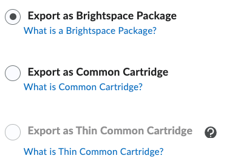
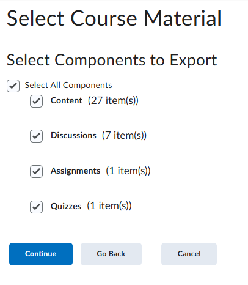
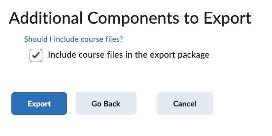
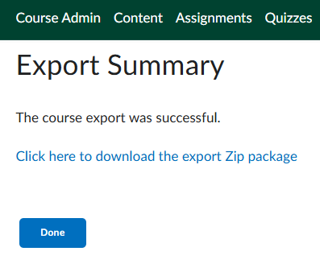
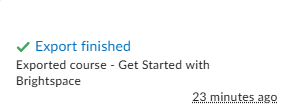

Course Template Studio
Bring your content in
Nothing leaves your computer: there is no server, it all happens in this tab.
How do I copy a page's Source Code?
- In Brightspace, open the page for editing and click Source Code </> in the editor toolbar.
- Select all (Ctrl+A, or ⌘A on a Mac), copy, and paste it in the box above.
Why here and not in Brightspace? Its editor can't select or delete a styled box once it's on the page. Here every part of the page is a block you can delete, move, edit or add to.
Don't have the course export yet? Show me how to get it
- Course Admin (in the course navbar, along the top)
Show me
Screenshot goes here —shots/1-course-admin.png - Import / Export / Copy Components
Show me
 Screenshot goes here —
Screenshot goes here —shots/2-import-export.png - Choose Export as Brightspace Package (not Common Cartridge)
Show me

Screenshot goes here —shots/3-brightspace-package.png - Tick Select All Components, then Continue
Show me

Screenshot goes here —shots/4-select-all.png - Tick Include course files in the export package, then Export
— don't skip this tick; it's off by default and without it your pages stay behind.
Show me

Screenshot goes here —shots/5-confirm-include-files.png - Wait for "The course export was successful", then click download the export Zip package
— a minute or two. Don't click Done until you've downloaded it.
Show me

Screenshot goes here —shots/6-download-zip.png
Drop that download in the box above exactly as it is — don't unzip it.
If it went wrong
I clicked Done, or navigated away, and never got the download
Nothing is lost. When the export is ready the bell (🔔) in the top bar gets an orange dot; click it and open Export finished to get the download link.

shots/bell-export-finished.pngMy Mac turned it into a folder
Safari unzipped it. Turn off Safari → Settings → General → "Open safe files after downloading", then download it again. Don't re-zip the folder yourself.
This is a Blackboard course
This tool works on Brightspace exports only.
Make it yours
After step 1.
More choices (you can skip these)
Everything below sits inside the page's card frame, which comes along when you copy.
Put it into Brightspace
After step 2.
Then, in Brightspace:
- Go to Course Admin → Import / Export / Copy Components.
- Choose Import Components → Start, upload the file, then Import All Components.
- Open Content and look it over. If a module now shows up twice, delete the older copy.
Your real course isn't changed by this tool — only by the import you run in Brightspace.
Then, in Brightspace:
- Open the page for editing and click Source Code </>.
- Select all, then paste — it replaces everything that was there.
- Save.
Adding a new page? In your course go to Content, open the module, Upload / Create → Create a File, give it a title, then Source Code and paste.
View the code
Everything is styled inline, so Brightspace keeps the look.